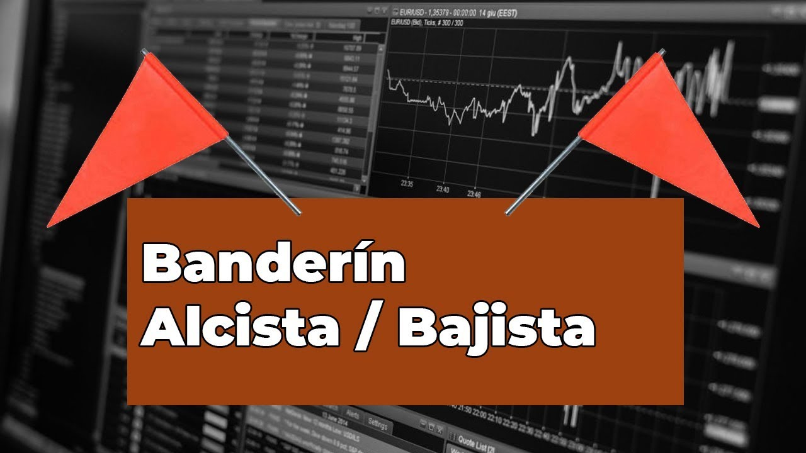

Banderín Alcista y Bajista
Este patrón chartista es un primo de la bandera que vimos en la clase pasada. Cómo puedes imaginar, es un patrón de continuidad.
En esta clase aprenderemos a operar con esta figura chartista, ya que tenemos que tener enconsideración ciertas caracteristicas.
El banderín es parecido al triangulo simétrico el cual hemos visto como operar en la clase pasada.
Al ser un patrón de continuidad, el banderín nos muestra un pequeño descanso del precio tras un empuje fuerte, ya sea al alza o al a baja.
Es decir, el banderín suele aparecer tras un fuerte movimiento del precio, durante este movimiento podemos encontrar una consolidación la cual forma el banderín. Tras la formación de la consolidación el precio continúa con su movimientos.
Para determinar si es un banderín alcista o bajista, es necesario determinar la dirección de la tendencia en la que nos encontramos.
Las características que tiene esta figura chartista son:
- Mástil o asta, que es la tendencia previa a la figura.
- Banderín, que es una especie de triangulo simétrico en pequeño.
- Para la correcta formación del banderín es mucho mejor que tenga dos testeos en cada extremo, dos en resistencia y dos en soporte.
- Tras la ruptura del banderín el precio buscará llegar al nivel objetivo, el cual esta determinado por la distancia del mástil.
En el siguiente vídeo se explica cómo podemos identificar y operar los banderines alcistas y bajistas, así como algunos ejemplos.
